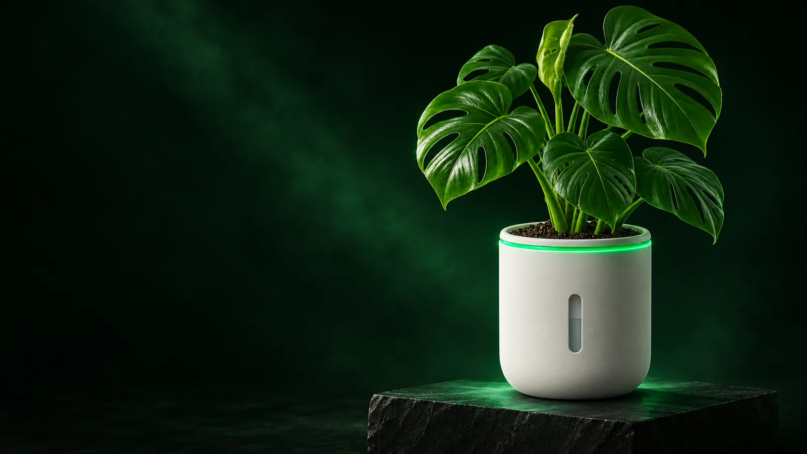
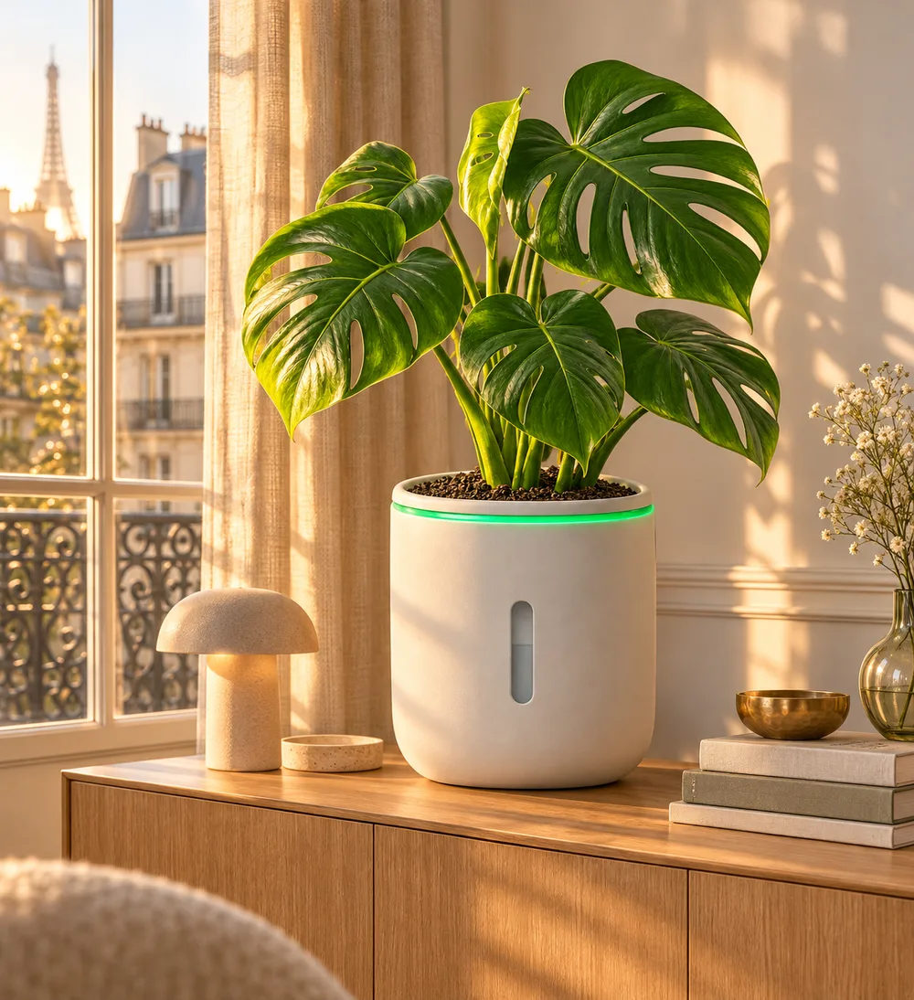
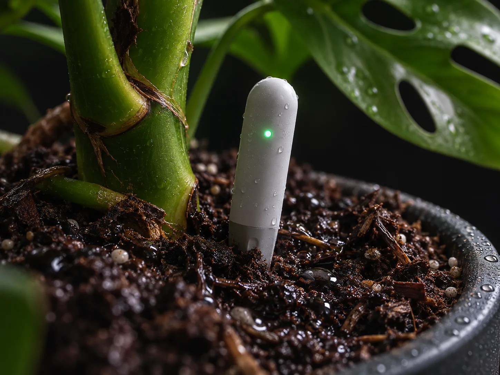
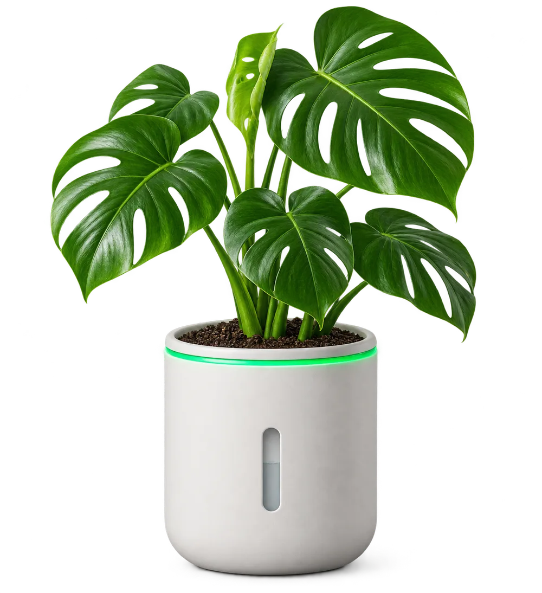
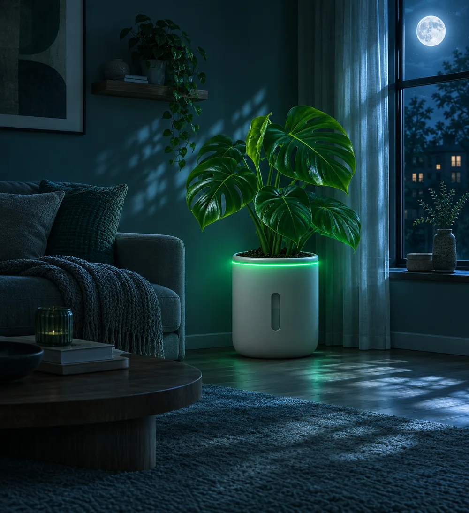
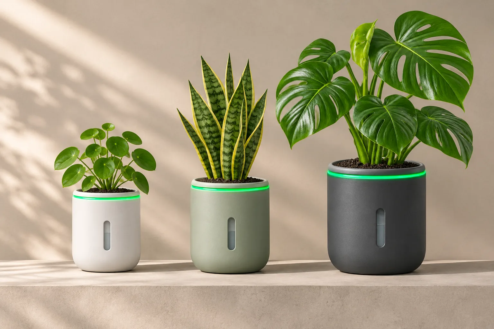

Hydratation autonome
Le réservoir intelligent distribue la quantité exacte d'eau selon le taux d'humidité du sol et l'espèce de la plante.
Micro-pompe · ±2 ml
Aura surveille, analyse et prend soin de vos plantes d'intérieur. Un écosystème intelligent qui allie design minimaliste et technologie botanique avancée.
Des capteurs haute précision intégrés dans un design épuré pour comprendre les besoins uniques de chaque plante.
Le réservoir intelligent distribue la quantité exacte d'eau selon le taux d'humidité du sol et l'espèce de la plante.
Micro-pompe · ±2 mlLes capteurs mesurent l'exposition tout au long de la journée pour vous conseiller le meilleur emplacement.
Lux + UV · toutes les 10 minSuivi de la conductivité du terreau pour vous alerter précisément quand ajouter de l'engrais.
Conductivité (EC)Température et humidité de l'air sont suivies en continu : Aura vous prévient d'un radiateur trop proche ou d'un courant d'air.
±0,3 °C · ±2 % HRUne notification seulement quand une action de votre part est vraiment nécessaire. L'anneau lumineux résume l'état d'un coup d'œil.
App + anneau LEDPartez l'esprit léger : Aura rationne le réservoir pour tenir jusqu'à 30 jours et vous envoie un bilan quotidien.
Jusqu'à 30 jours
Pas d'écran, pas de câble apparent. Une céramique mate, trois teintes douces, et un fin anneau lumineux qui ne s'allume que pour dire l'essentiel. La technologie reste invisible ; seule votre plante attire le regard.

La sonde capte humidité, conductivité et température du sol toutes les 10 minutes, pendant que le capteur du rebord suit la lumière.
Les mesures sont comparées au profil de votre espèce : Aura sait qu'une fougère aime l'humidité quand un cactus préfère la sécheresse.
La micro-pompe délivre l'eau goutte à goutte depuis le réservoir. Pour la lumière et l'engrais, Aura vous dit quoi faire, et quand.
Semaine après semaine, l'algorithme affine ses seuils selon la saison et votre intérieur. Votre plante a un profil unique.
Touchez un point pour explorer chaque composant.

Choisissez une plante, laissez filer le temps, et comparez vos soins à ceux d'Aura. Attention : trop d'eau est aussi dangereux que pas assez.
Votre plante est en pleine forme.
Zone idéale pour l'espèce choisie
L'application Aura (iOS et Android) regroupe l'historique de chaque plante, des conseils personnalisés et des alertes claires. Explorez l'interface ci-contre.
Bonjour,
3 plantes sur 4 vont très bien.
Lumière trop directe depuis 2 jours. Reculez-la d'un mètre de la fenêtre.
Il y a 1 hEngrais conseillé cette semaine (croissance printanière).
HierArrosage automatique effectué : 45 ml.
Hier, 07:12Un aperçu des profils intégrés à Aura. Filtrez selon votre intérieur et découvrez les réglages recommandés.

Indiquez la durée de votre absence : Aura calcule la réserve d'eau nécessaire.
| Arrosage manuel | Pot à réserve classique | Aura | |
|---|---|---|---|
| Dose adaptée à l'espèce | |||
| Mesure de la lumière | |||
| Alerte engrais | |||
| Autonomie en absence | 2 à 4 jours | ~10 jours | jusqu'à 30 jours |
| Risque d'excès d'eau | Élevé | Moyen | Très faible |
| Suivi historique |
Trois tailles, trois teintes. Réservez aujourd'hui avec 19 € d'acompte, remboursable à tout moment avant l'expédition.

Référence :
Non. Aura arrose de façon autonome même sans réseau. Le Wi-Fi (2,4 GHz) ou le Bluetooth servent uniquement à synchroniser l'application et à recevoir les alertes.
Prenez une photo dans l'application : l'espèce est reconnue parmi plus de 1 200 profils. Vous pouvez aussi la choisir manuellement et ajuster les seuils.
Environ 6 mois en usage normal. La recharge se fait en USB-C en deux heures, sans sortir la plante du pot.
Oui, tout terreau convient. Pour les cactées et succulentes, Aura recommande simplement un mélange drainant et adapte ses mesures en conséquence.
Oui, intégralement et à tout moment avant l'expédition, depuis votre espace client ou par simple e-mail.
Le réservoir est séparé du terreau et la base est entièrement étanche : aucune soucoupe n'est nécessaire, aucune trace sur vos meubles.
Prenez soin de ce qui vous fait du bien.